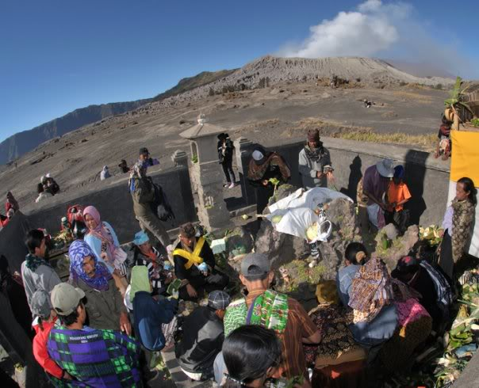
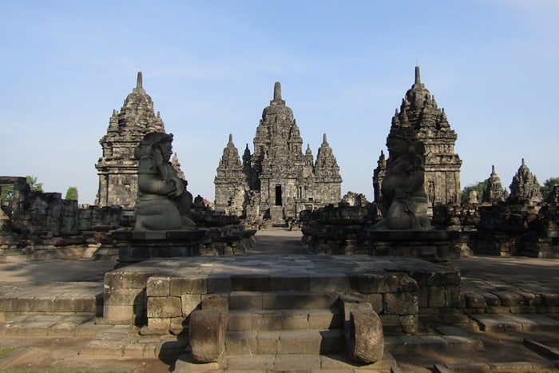
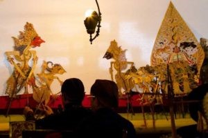

12 Desember 2020
MENGENAL RITUAL YANG DILAKUKAN TEPAT DI BAWAH KAKI GUNUNG BROMO.
Siapa sih yang tidak terpanah dengan keindahan Gunung Bromo, Jawa Timur? Seperti yang kita ketahui bahwa Gunung
Bromo selalu menjadi destinasi utama para pelancong negeri ketika sedang dan ingin berkunjung ke Jawa Timur terlebih lagi bagi
mereka yang ingin melihat sunrise dari puncak Gunung Bromo.
Upacara Kasada Bromo merupakan tradisi adat yang rutin dilakukan oleh Suku Tengger. Upacara ini diadakan di Pura
Luhur Poten Gunung Bromo, yang berada dibawah kaki gunung bromo kemudian dilanjutkan menuju puncak gunung. Tidak seperti pemeluk
hindu pada umumnya yang memiliki candi sebagai tempat ibadah, Pura Luhur Poten hanya terdiri dari sebidang tanah dilahan pasir
sebagai tempat berlangsungnya Upacara Kasada.

20 November 2020
CANDI SEWU: BENTUK TOLERANSI DARI PARA LELUHUR
Candi yang dibangun sekitar abad ke-8 masehi ini merupakan gugus candi yang letaknya berdekatan dengan Candi Prambanan.
Jaraknya pun tidak begitu jauh, kurang lebih 800 meter di sebelah selatan arca Roro Jongrang. Disebut sebagai Candi Sewu karena
memiliki jumlah candi yang banyak seolah-olah berjumlah “seribu” candi. Namun pada kenyataannya candi yang berada di dalam kompleks
Candi Sewu hanya berjumlah 249 candi.

16 Februari 2019
MENGENAL BUDAYA INDONESIA: WAYANG KULIT
Wayang adalah seni pertunjukan yang berasal dari Indonesia berkembang pesat di Pulau Jawa dan
Bali. Wayang berasal dari kata “Ma Hyang” yang artinya roh spiritual, dewa atau Tuhan yang Maha Esa. Wayang
telah ditetapkan oleh UNESCO sebagai pertunjukan bayangan boneka tersohor dari Indonesia. Indonesia Memiliki
banyak macam atau jenis wayang, di antaranya Wayang Kulit, Wayang Kayu, Wayang Bambu, Wayang Orang, Wayang
Rumput dan Wayang Motekar.